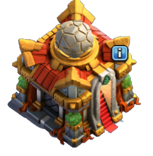

Dante (Líder)
- Ayuntamiento: Th16
- Nivel de Experiencia: 266
- Estrellas de Guerra: 2849
- Histórico Máximo de Copas: 5686
Nuestro líder Dante, es un jugador apasionado y multifacético. Sus cuentas, incluyendo Ruggero y kamikaze, por mencionar algunas, son ampliamente reconocidas por su destreza en el campo de batalla. Entre sus tres cuentas principales, Dante, acumla más de 7000 estrellas de Guerra. ¿No te parece impresionante?
Además de ser un estratega formidable, Ruggero es el creador y fundador de nuestro clan. Su visión y determinación son los pilares que han llevado al éxito de nuestro equipo.
Como líder, Kamikaze es un apasionado por las guerras y siempre está buscando oportunidades para fortalecer y hacer crecer al clan. Su compromiso y dedicación son evidentes en cada batalla en la que participa.
No solo es un jugador excepcional, sino también un ávido aprendiz y un mentor maestro. Está siempre dispuesto a compartir sus conocimientos y experiencias con los miembros del clan, guiándolos hacia la excelencia y fomentando un ambiente de aprendizaje continuo.
Con Dante a la cabeza, nuestro clan se destaca como una fuerza temible en el mundo virtual. Su liderazgo inspirador y su pasión por la guerra son un ejemplo para todos nosotros, y nos motiva a alcanzar nuevas alturas en cada batalla que enfrentamos juntos."
Karamázov. ©® (Colíder)
- Ayuntamiento: Th15
- Nivel de Experiencia: 250
- Estrellas de Guerra: 2919
- Histórico Máximo de Copas: 5353
¡Más conocido como Kara o el señor de las guerras! Ha acumulado un impresionante total de 2919 estrellas en guerras, demostrando su habilidad en el campo de batalla.
Con un nivel de experiencia de 250, se ha convertido en un jugador experimentado en el juego. Ayuntamiento en el nivel Th15 y una cuenta secundaria de Th11.
Ha alcanzado un alto nivel de fortaleza y desarrollo en su aldea. Su récord máximo de copas es de 5353, demostrando su destreza y logros en las guerras y en Ligas. Karamázov es un miembro valioso de nuestro clan y siempre está listo para luchar y alcanzar nuevas victorias.
Skywalker (Colíder)
- Ayuntamiento: Th16
- Nivel de Experiencia: 247
- Estrellas de Guerra: 2579
- Histórico Máximo de Copas: 5077
Uno de nuestros jugadores más destacados, con un total de 2579 estrellas de guerra, Skywalker, o Sky como lo llamamos en nuestro clan, ha demostrado ser un verdadero líder en el campo de batalla. Su nivel de experiencia de 247 indica que ha invertido tiempo y esfuerzo para dominar las estrategias y tácticas del juego.
Con su Ayuntamiento en el nivel Th16, Estrellas de Guerra ha construido una aldea poderosa y bien defendida. Su histórico máximo de copas de 5077 muestra su habilidad para competir en las batallas de trofeos y escalar a lo más alto de la clasificación.
Estrellas de Guerra es un jugador dedicado y valioso para nuestro clan. Siempre está dispuesto a compartir sus conocimientos y ayudar a sus compañeros de clan a mejorar. ¡No hay duda de que Estrellas de Guerra es un activo imprescindible en nuestras batallas y un ejemplo a seguir para todos los miembros del clan!
Richar (Colíder)
- Ayuntamiento: Th16
- Nivel de Experiencia: 186
- Estrellas de Guerra: 1300
- Histórico Máximo de Copas: 5238
Richar es un jugador excepcional, conocido por sus habilidades como guerrero y su enfoque estratégico en la construcción de aldeas ingenieras. Con más de 2500 estrellas de guerra acumuladas en sus dos grandes aldeas y un histórico máximo de copas de 5238, ha demostrado ser un oponente formidable en el campo de batalla con capacidad para competir en las batallas de trofeos y una constante búsqueda de la excelencia en el juego.
Su nivel de experiencia de 186 indica que ha invertido tiempo y esfuerzo en perfeccionar su arte de la guerra. Richar es reconocido por su destreza en la planificación de ataques precisos y la ejecución estratégica de sus tropas.
Además de sus habilidades en combate, Richar se ha destacado en la creación de aldeas ingenieras. Con su Ayuntamiento en el nivel Th16, ha sabido aprovechar al máximo las ventajas y desventajas de este enfoque de juego, creando una aldea bien equilibrada y muy importante y decisiva en nuestras Guerras y en la Liga.
Richar es un jugador respetado y admirado por su destreza y habilidad en todas las facetas del juego. Su enfoque estratégico y su dedicación lo convierten en un verdadero líder en nuestro clan.
Bayron, un valioso colíder en el clan Los Imparables, es un jugador experimentado con un Ayuntamiento de nivel 16. Su nivel de experiencia asciende a 244, lo que demuestra su dedicación y conocimiento en el juego. Con su segunda cuenta TH15 suma un impresionante historial de más de 3300 estrellas de guerra, Bayron ha demostrado su habilidad estratégica y su compromiso con la victoria.
Además, ha alcanzado un máximo histórico de copas de 5657, lo que refleja su destreza en el campo de batalla. Con Bayron a tu lado, puedes confiar en su experiencia y liderazgo para llevar al clan hacia la grandeza. ¡Prepárate para la victoria con Bayron en tu equipo!.